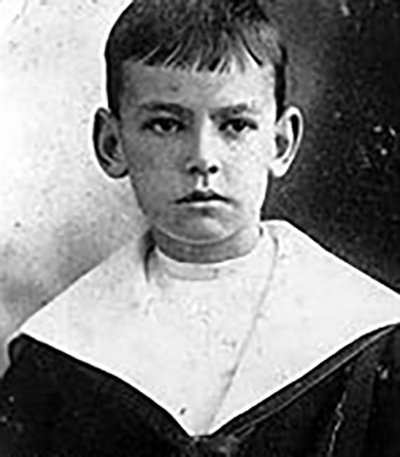
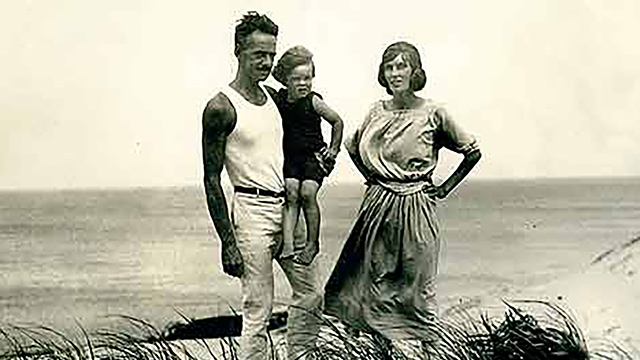
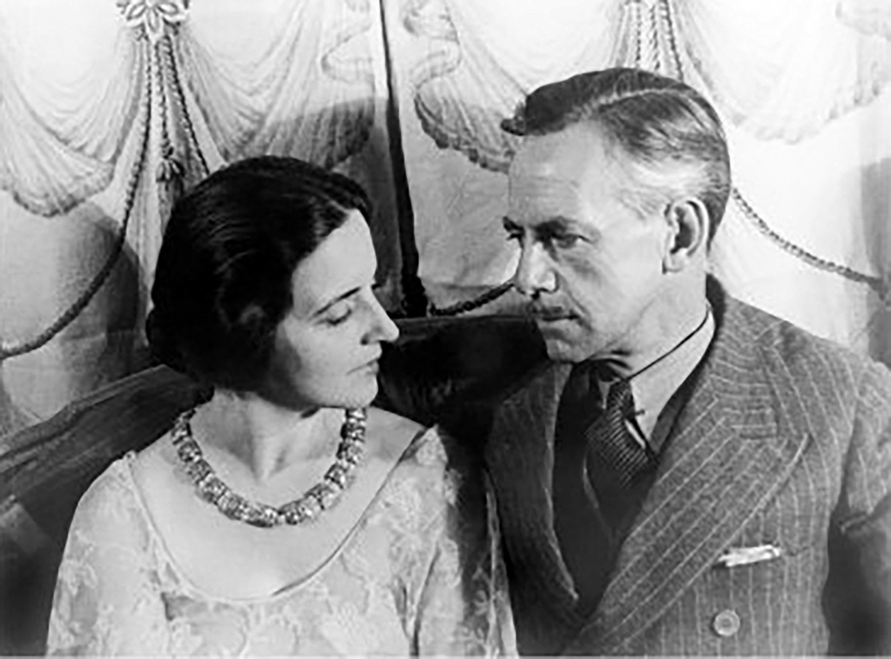
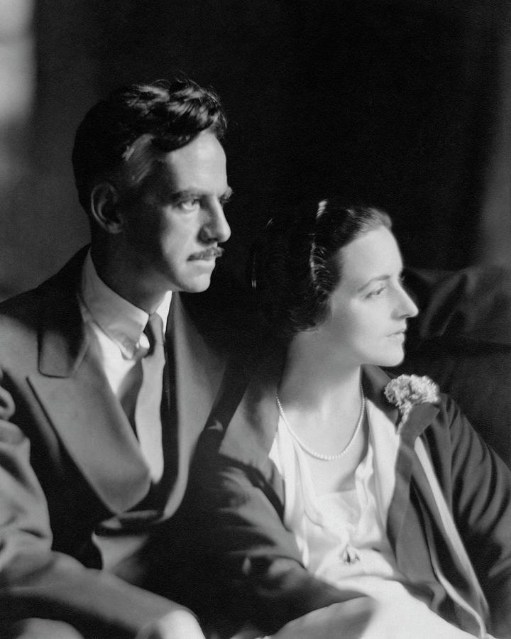
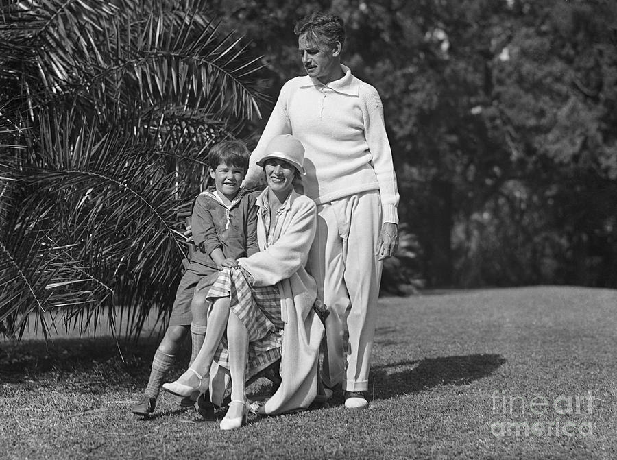
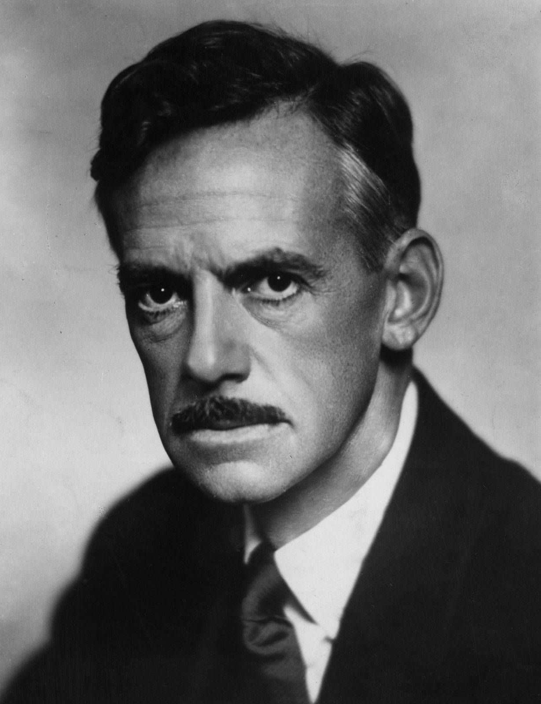

A Dramatic Genius is Born!
Eugene Gladstone O'Neill was born in a hotel room on October 16,
1888 in New York, New York. From an early age, it seemed that Eugene
would be successful in drama seeing as he was born into theatre.
This was because his father, James O'Neill, was a well known touring
actor in the late 19th century thanks to his role in
The Count of Monte Cristo. After his birth, his father would
continue touring this production. Eugene's mother would travel the
across the country with her husband until the birth of thier sons,
and eventually Eugene. Mary Ellen, Eugene's mother, had first given
birth to James Jr. O'Neill. After, Edmund O'Neill was born. However,
Edmund would die only three years after his birth due to measles.
Finally, Eugene was born, but his mother was still grieving the
death of Edmund and would quickly get addicted to morphine. Eugene
would continue living his life one the road moving from hotel room
to hotel room. This already rough-and-tumble life was also assisted
by the strong Irish Catholicism of his father and mystical piety of
his mother. This struggle would also later show in his plays as the
struggle between God and religion.
As Eugene O'Neill newared his 7th birthday, he was sent off to
boarding school to study at Mt. St. Vincent in the Bronx and Betts
Academy in Stamford, Conneticut. Here, he also had a strict Catholic
upbringing adding to the conflict that he had felt earlier. He would
then return to New York City and attend Princeton University in
1906. He felt as though studies weren't for him and would soon leave
Princeton after only 10 months.
Early Career
After Eugene's time at Princeton, he began to recieve his education
from "life experience." He would go on to take several sea voyages
in Buenos Aires, Liverpool, and New York City. He would also run
around town with his older brother James and would also pick up his
drinking habit indulging heavily in alcohol. He would also have a
very brief marriage with Kathleen Jenkins which ended up resulting
in a son, Eugene O'Neill Jr. These six years since him dropping out
of college nearly killed him. At the age of 24, Eugene had recovered
from his chaotic time and held a job for a few months as a reporter
of the New London Telegraph. In 1912, O'Neill had tuberculosis. He
confined himself to the Gaylord Farm Sanitarium in Wallingford,
Connecticut for six months where he seized the chance for his
"rebirth" through writing plays. He first found inspiration from
August Strindberg, a European dramatists, and would later enroll in
writing class at Harvard University.
Eugene's first attempts were very awkard melodramas about serious
subjects often seen in novels and not presented on the American
stage. Some of these subjects include prostitution, derelicts,
lonely sailors, and God's injustice. Once he was sent to Harvard to
study with George Pierce Baker, the opportunity to work steadily set
him firmly on the path of writing plays.
It was the summer of 1916 when O'Neill made his first appearance as
a playwright in the produciton of Bound East for Cardiff. It
was produced as a one-act sea play in the quiet fishing village of
Provincetown, Massachusetts. In the fall, due to the talent in the
play, a group known as the Playwrights' Theater was formed. It was
then that Eugene O'Neill's one-act play also made its New York debut
through the group. The group continued to produce many of Eugene's
one-act sea plays over the next few years which would also assist in
elevating the groups reputation. It was also around this time that
Eugene married fellow writer Agnes Boulton. They would go on to have
two children together, Shane and Oona. Eugene's break through
creation was later in 1920 with his play
Beyond the Horizon. This was his first full-length play that
was produced on Broadway at the Morosco Theater. By impressing
critics with its tragic realism, Eugene O'Neill won the Pluitzer
Prize. It was at this point were Eugene would become one of the most
widely translated and produced dramatist.
A Star Blooms
Between 1920 and 1943, Eugene had written 20 long plays and several
shorter ones. The amount of research, notes, and rewrites that he
shelved showed his commitment to his work as a writer. No matter the
amount of plays, all of what Eugene wrote was written from a very
personal point of view. This was largely due to the fact that Eugene
had tragic family relations growing up which he continued to be torn
about. Even so, his personal relations may have added to the depth
of his plays. One of his most-celebrated plays is
Anna Christie. This 1922 Broadway production was an instant
hit and in Eugene's eyes "too easy." The play was about a poor
Swedish American girl who lived down her life and was enforced into
prostitution until she finds happiness with a young sailor. This
tale, which Eugene hated to the very end of writing, allowed the
playwright to earn his second Pulitzer Prize.
It was also around this time that he suffered many personal loses
including his brother and parents. This almost seemed to aid Eugene
in creating a Greek tragedy reflectin his own life in
Desire Under the Elms. The play was almost immediately
acclaimed to be one of the greatest American plays of the 20th
century. His innovative writing would continue with
Strange Interlude. This play was revolutionary from not only
a writing stand point, but style and length of play as well. It used
many techniques that were new to modern theatre at the time and
continued to connect back to family troubles. It was also around
this time that Eugene would leave his second wife and begin a
relationship, and eventually marry with Carlotta Montereyin 1929.
Later in 1931, O'Neill would create one of his greatest masterpieces
in Mourning Becomes Electra. It was here were Eugene would
make full use of Greek forms, themes, and characters. Eugene would
give this play a New England setting in order to give it more modern
credibility which turned out to be a big success for him.
These works among many, many others gave Eugene O'Neill a most
respected reputation. However, he was more hight regarded overseas,
particularly Sweden. This was partly do to the fact that he would
acknowledge his debt to August Strindberg for influencing him early
on. In 1936, Swedish Academy gave O'Neill the Nobel Prize for
Literature which made him the first ever American playwrite to
recieve the award.
Legacy of Eugene O'Neill
In his later years, Eugene would complete
Long Day's Journey Into Night which was an autobiographical
play. However, he refused to have it produced until long after his
death. He would take many breaks but eventually return to the stage
with The Iceman Cometh. However, in 1947 he began to near his
career's end as he was diagnosed with Parkinson's. His tragic family
relations would also continue with his own as he cut ties with Shane
for being arrested with drugs and Eugene Jr commiting suicide two
years later. At the age of 65 on November 27, 1953, O'Neill passed
away in Boston of bronchial pneumonia. His final accolade was in
1957 when Long Day's Journey Into Night was finally produced
on Broadway and O'Neill woudld recieve a Tony Award and Pulitzer
Prize.
Eugene became the first to do many things such as being the first to
regard the stage as a lterary medium or be the only playwrite ever
to win the Nobel Prize. Thanks to his works, theatre in the 20th
century grew into a cultural medium competing with American fiction,
music, and art. Eugene would use the theatre as a valid forum of
release as he presented serious ideas.
Fun Fact: Eugene O'Neill's daughter, Oona, ended up marrying
Charlie Chaplin when she was only 18 just to infuriate her
father.





